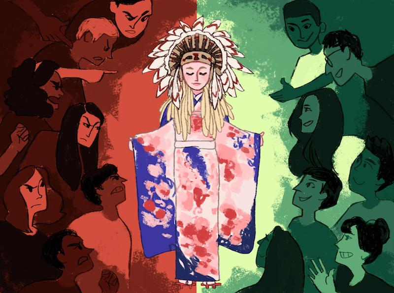

What Is Cultural Appropriation?
Cultural appropriation refers to the use of objects or elements of a non-dominant
culture in a way that doesn't respect their original meaning, give credit to their source, or reinforces
stereotypes or contributes to oppression.
In this way, cultural appropriation is a layered and nuanced phenomenon
that many people may have trouble understanding—or may not realize when they are doing it themselves.
It may be
natural to merge and blend cultures as people from different backgrounds come together and interact. In fact,
many wonderful inventions and creations have been born from the merging of such cultures, such as country music.
However, the line is drawn when a dominant cultural group makes use of elements of a non-dominant group in a way
that the non-dominant group views as exploitative.